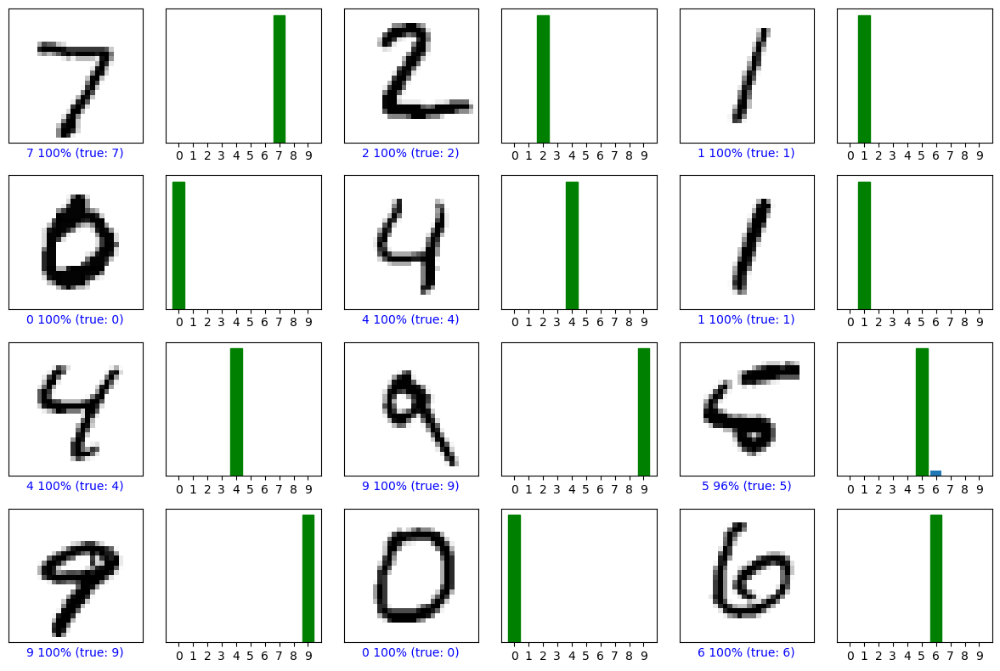

28.9. Demo: MNIST CNN in PyTorch (Binder-ready)#
This notebook is a convolutional neural network (CNN) version of the earlier MLP demo, kept Binder-friendly and classroom-ready. It adds convolution/pooling layers for better accuracy.
# --- Setup & Reproducibility --------------------------------------------------
import os, time, numpy as np
import torch
SEED = int(os.environ.get("SEED", 1234))
rng = np.random.default_rng(SEED)
torch.manual_seed(SEED)
if torch.cuda.is_available():
torch.cuda.manual_seed_all(SEED)
device = torch.device("cuda" if torch.cuda.is_available() else "cpu")
print("PyTorch:", torch.__version__)
print("Device :", device)
PyTorch: 2.6.0
Device : cpu
# --- Imports ------------------------------------------------------------------
import matplotlib.pyplot as plt
from torch import nn
from torch.utils.data import DataLoader, random_split
from torchvision import datasets, transforms
Intel MKL WARNING: Support of Intel(R) Streaming SIMD Extensions 4.2 (Intel(R) SSE4.2) enabled only processors has been deprecated. Intel oneAPI Math Kernel Library 2025.0 will require Intel(R) Advanced Vector Extensions (Intel(R) AVX) instructions.
# --- Data: MNIST --------------------------------------------------------------
# Normalize to standard MNIST mean/std for CNN training
transform = transforms.Compose([
transforms.ToTensor(),
transforms.Normalize((0.1307,), (0.3081,))
])
train_full = datasets.MNIST(root="../assets", train=True, download=True, transform=transform)
test_ds = datasets.MNIST(root="../assets", train=False, download=True, transform=transform)
n_val = 10000
n_train = len(train_full) - n_val
train_ds, val_ds = random_split(train_full, [n_train, n_val], generator=torch.Generator().manual_seed(SEED))
batch_size = 128 # good default; Binder-safe with num_workers=0
train_loader = DataLoader(train_ds, batch_size=batch_size, shuffle=True, num_workers=0, pin_memory=False)
val_loader = DataLoader(val_ds, batch_size=batch_size, shuffle=False, num_workers=0, pin_memory=False)
test_loader = DataLoader(test_ds, batch_size=batch_size, shuffle=False, num_workers=0, pin_memory=False)
print(f"Train/Val/Test sizes: {len(train_ds)}/{len(val_ds)}/{len(test_ds)}")
Train/Val/Test sizes: 50000/10000/10000
# --- Model: A small CNN -------------------------------------------------------
# Architecture: (1x28x28) -> Conv(32, 3x3) -> ReLU -> Conv(64, 3x3) -> ReLU -> MaxPool(2)
# -> Dropout(0.25) -> Flatten -> Linear(64*12*12, 128) -> ReLU
# -> Dropout(0.5) -> Linear(128, 10)
class CNN(nn.Module):
def __init__(self):
super().__init__()
self.features = nn.Sequential(
nn.Conv2d(1, 32, kernel_size=3, padding=1),
nn.ReLU(inplace=True),
nn.Conv2d(32, 64, kernel_size=3, padding=1),
nn.ReLU(inplace=True),
nn.MaxPool2d(2), # 28 -> 14
nn.Dropout(0.25),
)
self.classifier = nn.Sequential(
nn.Flatten(),
nn.Linear(64*14*14, 128),
nn.ReLU(inplace=True),
nn.Dropout(0.5),
nn.Linear(128, 10) # raw logits
)
def forward(self, x):
x = self.features(x)
x = self.classifier(x)
return x
model = CNN().to(device)
print(model)
print("Total parameters:", sum(p.numel() for p in model.parameters()))
CNN(
(features): Sequential(
(0): Conv2d(1, 32, kernel_size=(3, 3), stride=(1, 1), padding=(1, 1))
(1): ReLU(inplace=True)
(2): Conv2d(32, 64, kernel_size=(3, 3), stride=(1, 1), padding=(1, 1))
(3): ReLU(inplace=True)
(4): MaxPool2d(kernel_size=2, stride=2, padding=0, dilation=1, ceil_mode=False)
(5): Dropout(p=0.25, inplace=False)
)
(classifier): Sequential(
(0): Flatten(start_dim=1, end_dim=-1)
(1): Linear(in_features=12544, out_features=128, bias=True)
(2): ReLU(inplace=True)
(3): Dropout(p=0.5, inplace=False)
(4): Linear(in_features=128, out_features=10, bias=True)
)
)
Total parameters: 1625866
# --- Training Loop ------------------------------------------------------------
criterion = nn.CrossEntropyLoss()
optimizer = torch.optim.Adam(model.parameters(), lr=1e-3)
def run_epoch(loader, train=True):
if train:
model.train()
else:
model.eval()
total, correct, running_loss = 0, 0, 0.0
t0 = time.time()
for xb, yb in loader:
xb, yb = xb.to(device), yb.to(device)
if train:
optimizer.zero_grad()
logits = model(xb)
loss = criterion(logits, yb)
if train:
loss.backward()
optimizer.step()
running_loss += loss.item() * xb.size(0)
pred = logits.argmax(1)
correct += (pred == yb).sum().item()
total += yb.size(0)
elapsed = time.time() - t0
return running_loss/total, correct/total, elapsed
EPOCHS = 8 # CNN learns faster; 8 epochs is plenty for a demo
history = {"train_loss": [], "train_acc": [], "val_loss": [], "val_acc": []}
for epoch in range(1, EPOCHS+1):
tr_loss, tr_acc, tr_t = run_epoch(train_loader, train=True)
va_loss, va_acc, va_t = run_epoch(val_loader, train=False)
history["train_loss"].append(tr_loss); history["train_acc"].append(tr_acc)
history["val_loss"].append(va_loss); history["val_acc"].append(va_acc)
print(f"Epoch {epoch:2d}/{EPOCHS} | "
f"train loss {tr_loss:.4f} acc {tr_acc:.4f} ({tr_t:.1f}s) | "
f"val loss {va_loss:.4f} acc {va_acc:.4f} ({va_t:.1f}s)")
Epoch 1/8 | train loss 0.2532 acc 0.9236 (91.1s) | val loss 0.0724 acc 0.9782 (3.4s)
Epoch 2/8 | train loss 0.0909 acc 0.9734 (55.5s) | val loss 0.0517 acc 0.9854 (3.3s)
Epoch 3/8 | train loss 0.0698 acc 0.9793 (52.3s) | val loss 0.0475 acc 0.9872 (3.2s)
Epoch 4/8 | train loss 0.0556 acc 0.9827 (51.7s) | val loss 0.0400 acc 0.9895 (3.3s)
Epoch 5/8 | train loss 0.0494 acc 0.9847 (52.7s) | val loss 0.0402 acc 0.9890 (3.2s)
Epoch 6/8 | train loss 0.0416 acc 0.9869 (51.6s) | val loss 0.0395 acc 0.9893 (3.2s)
Epoch 7/8 | train loss 0.0383 acc 0.9877 (52.5s) | val loss 0.0349 acc 0.9912 (3.7s)
Epoch 8/8 | train loss 0.0321 acc 0.9896 (53.8s) | val loss 0.0437 acc 0.9890 (3.2s)
# --- Test Set Evaluation ------------------------------------------------------
model.eval()
total, correct, running_loss = 0, 0, 0.0
with torch.no_grad():
for xb, yb in test_loader:
xb, yb = xb.to(device), yb.to(device)
logits = model(xb)
loss = criterion(logits, yb)
running_loss += loss.item() * xb.size(0)
pred = logits.argmax(1)
correct += (pred == yb).sum().item()
total += yb.size(0)
test_loss = running_loss/total
test_acc = correct/total
print(f"\nTest loss {test_loss:.4f} | Test accuracy {test_acc:.4f}")
Test loss 0.0322 | Test accuracy 0.9901
# --- Prediction & Visualization ----------------------------------------------
import numpy as np
softmax = nn.Softmax(dim=1)
# Inverse normalization for display
inv_mean, inv_std = 0.1307, 0.3081
def denorm(x):
return (x * inv_std + inv_mean).clamp(0, 1)
def predict_probs(x_batch):
model.eval()
with torch.no_grad():
return softmax(model(x_batch)).cpu().numpy()
def plot_image(predictions_array, true_label, img):
import matplotlib.pyplot as plt
predictions_array, true_label, img = predictions_array, int(true_label), img
plt.grid(False); plt.xticks([]); plt.yticks([])
plt.imshow(img, cmap=plt.cm.binary)
predicted_label = int(np.argmax(predictions_array))
color = 'blue' if predicted_label == true_label else 'red'
plt.xlabel(f"{predicted_label} {100*np.max(predictions_array):2.0f}% (true: {true_label})", color=color)
def plot_value_array(predictions_array, true_label):
import matplotlib.pyplot as plt
predictions_array, true_label = predictions_array, int(true_label)
plt.grid(False); plt.xticks(range(10)); plt.yticks([])
bars = plt.bar(range(10), predictions_array)
bars[np.argmax(predictions_array)].set_color('red')
bars[true_label].set_color('green')
# Gallery
num_rows, num_cols = 4, 3
num_images = num_rows * num_cols
fig = plt.figure(figsize=(2*2*num_cols, 2*num_rows))
imgs, labels = [], []
for i in range(num_images):
img, label = test_ds[i]
imgs.append(img)
labels.append(label)
xb = torch.stack(imgs).to(device)
probs = predict_probs(xb)
for i in range(num_images):
img = denorm(imgs[i]).squeeze().cpu().numpy() # de-normalize for nicer display
label = labels[i]
ax1 = plt.subplot(num_rows, 2*num_cols, 2*i+1)
plot_image(probs[i], label, img)
ax2 = plt.subplot(num_rows, 2*num_cols, 2*i+2)
plot_value_array(probs[i], label)
plt.tight_layout(); plt.show()

Notes#
The CNN uses two conv layers (32→64) with 3×3 kernels, ReLU, a 2×2 max-pool, then two FC layers.
We normalize MNIST to
(mean=0.1307, std=0.3081)which helps training; images are denormalized for display.EPOCHS=8is chosen to keep Binder runs snappy while still achieving strong accuracy (>99% is typical).